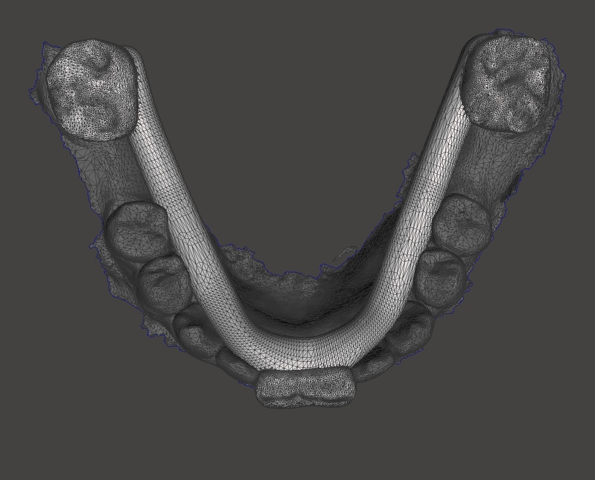

Planification de la position mandibulaire guidée par les articulations pour les cas de rééducation restauratrice, orthodontique et complète TMJ-sensitive sélectionnés par le clinicien.
AxisGuide est un flux de travail de planification numérique par étapes qui utilise la mesure MRI de l'ampleur et de la direction du déplacement du disque, CBCT et des scans intra-oraux pour simuler une position mandibulaire proposée. Un localisateur imprimé en 3D est conçu à partir de l'espace interarcade à cette position, afin que le clinicien puisse examiner la réponse articulaire, la relation disque-condyle et la réponse aux symptômes avant de tenter une reconstruction occlusale provisoire.
Simulation vectorielle condylienneSimulation de crâne et de dentition
Attelles et déprogrammeurs
Appareil CAD
Pour les demandes simples d'attelles ou d'appareils fonctionnels où la position de l'occlusion est déjà définie par le clinicien.
Sortie typique
Attelles du Michigan, déprogrammeurs, attelles de stabilisation, gardes de nuit, rampes de morsure et fichiers de production.
AxisGuide
Planification de la position commune en premier
Pour les cas complexes où la position mandibulaire elle-même doit être évaluée avant une reconstruction orthodontique ou restauratrice.
Sortie typique
Examen du vecteur de déplacement MRI, simulation du mouvement mandibulaire, conception du localisateur imprimé en 3D, références de vérification, configuration occlusale provisoire et références de reconstruction orthodontique ou restauratrice.
Logique technique
Réflexion guidée par MRI, traduite en un flux de travail numérique collaboratif.
Le flux de travail ne démarre pas à partir d’un anneau de morsure conventionnel. Les mesures MRI définissent le vecteur de déplacement du disque, le mouvement mandibulaire est simulé numériquement et un localisateur imprimé indique la position proposée pour les symptômes dirigés par le clinicien et la vérification MRI avant qu'une reconstruction occlusale provisoire ne soit testée.

01
Intégration des enregistrements
MRI, CBCT, scans intra-oraux, symptômes cliniques, photos et objectifs de rééducation sont alignés dans un seul contexte de planification.
02
MRI mesure vectorielle
L'ampleur et la direction du déplacement du disque sont mesurées à partir de MRI et traduites en un vecteur de planification pour la position mandibulaire proposée.
03
Simulation de mouvement mandibulaire
La mandibule est simulée dans la position proposée, avec l'espace interarcade, les références condyliennes et le dégagement occlusal examinés numériquement.
04
Vérification du localisateur
Un localisateur imprimé en 3D est conçu à partir de cet espace interarcade afin que le clinicien puisse vérifier la relation disque-condyle, la vérification MRI et les symptômes.
05
Essai occlusal provisoire
Si la vérification est stable, des dents provisoires ou une reconstruction occlusale temporaire permettent de tester les contacts MIP, l'occlusion dynamique, le guidage canin et le guidage antérieur.
06
Reconstruction orthodontique ou restauratrice
La position vérifiée peut ensuite guider une reconstruction occlusale orthodontique, une reconstruction restauratrice définitive ou une séquence de traitement combinée.
Détail du localisateur CAD
L'espace interarcade prévu est traduit en un support de position conçu par CAD pour la vérification clinique, et non en une attelle générique.
Enregistrement de position numérique
La position mandibulaire proposée est documentée par rapport aux références crâniennes, aux scans intra-oraux et aux références condyliennes avant la fabrication du localisateur.
Essai occlusal provisoire
La configuration provisoire peut être revue par rapport aux contacts statiques MIP prévus avant que l'occlusion dynamique, le guidage canin et le guidage antérieur ne soient affinés.
Cas les mieux adaptés
Rééducation de toute la bouche lorsque l'occlusion de départ n'est pas fiable
Cas d’orthodontie-restauration nécessitant une coordination de la position mandibulaire
Cas TMJ sélectionnés par le clinicien avec ouverture limitée, douleurs articulaires, bruits articulaires ou déviation à l'ouverture
Asymétrie faciale, déviation mandibulaire ou rétrusion mandibulaire nécessitant une planification interdisciplinaire
TMJ-sensitive Cas dans lesquels les cliniciens souhaitent une aide à la planification basée sur l'imagerie
Planification des livrables
Liste de contrôle des dossiers et examen de l’état de préparation du dossier
Références de planification du vecteur de déplacement MRI
Simulation numérique du mouvement mandibulaire
Prise en charge du localisateur imprimé en 3D CAD
Références provisoires de reconstruction occlusale
Accompagnement au séquençage de reconstruction orthodontique ou restauratrice
Limite clinique
Les décisions de diagnostic et de traitement appartiennent au clinicien
La planification et la vérification sont revues au cas par cas avec l'équipe traitante
La relation disque-condyle, les symptômes et les résultats d'imagerie sont vérifiés cliniquement lorsque cela est indiqué
Les articulations dégénérées ou les affections discales non réductibles nécessitent une sélection minutieuse des cas
Le séquençage orthodontique ou restaurateur définitif reste dirigé par le clinicien
Note de positionnementAxisGuide est un service avancé de planification et de collaboration numérique. Il prend en charge l'examen professionnel et la planification du traitement tandis que le diagnostic, la sélection du traitement et l'évaluation des résultats restent sous le contrôle du clinicien.
Discuter un cas AxisGuidePartagez les TMJ MRI, CBCT/DICOM anonymisés, les scans intra-oraux, les enregistrements de position mandibulaire actuels et l'objectif de rééducation afin que la portée puisse être examinée avant le devis.